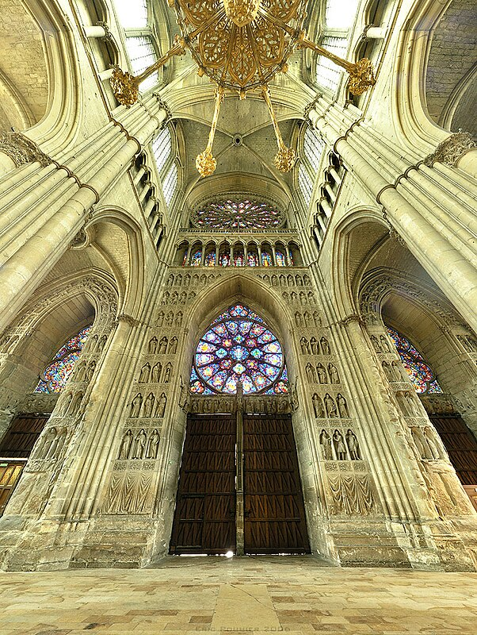
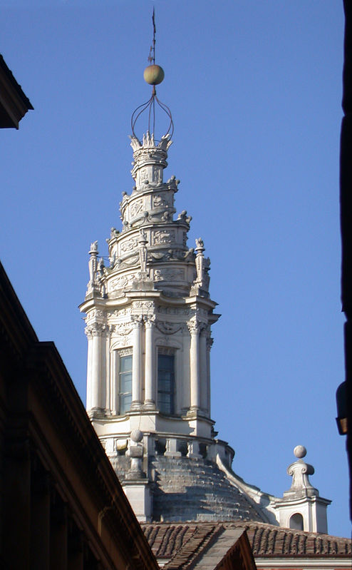
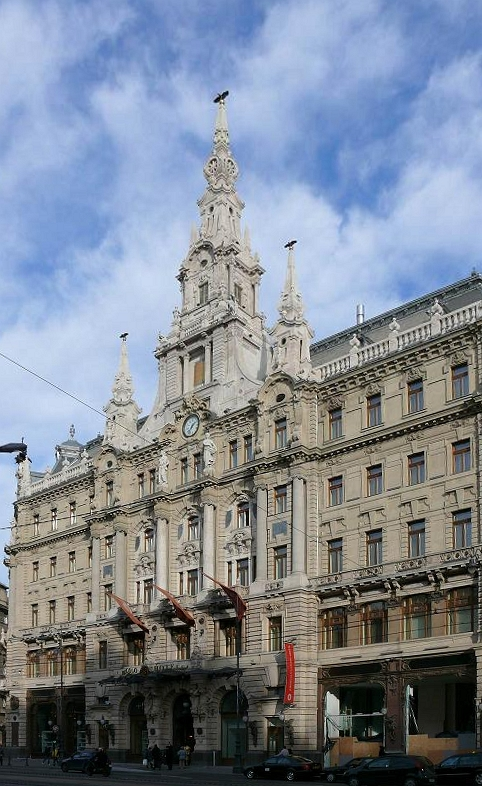
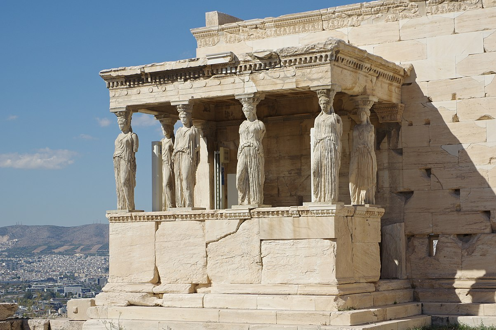

Imagini

Catedrala din Reims, in stil gotic

Biserica Sant'Ivo alla Sapienza din Roma, în stil baroc

Palatul New York, Budapesta (Ungaria), in stil electic

Théâtre des Champs-Élysées în Paris, in stil modern

Cariatidele Erehteionului din Acropola Ateniană, in stil clasic